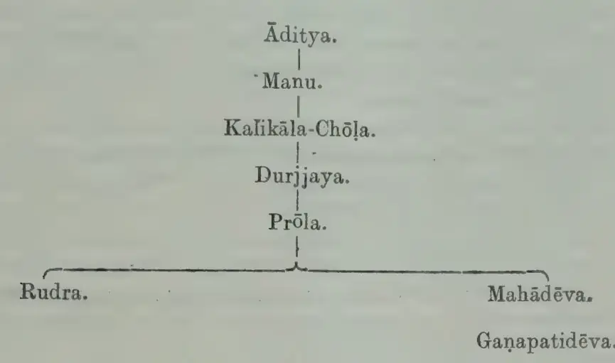
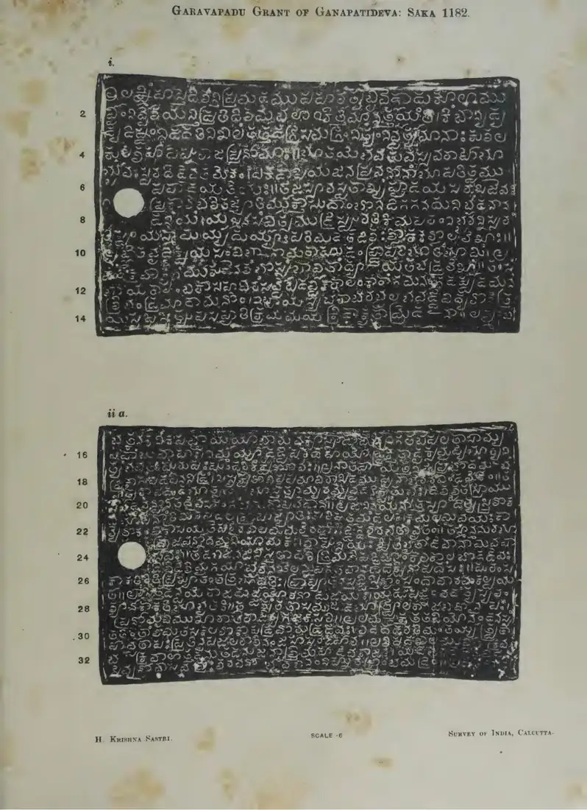
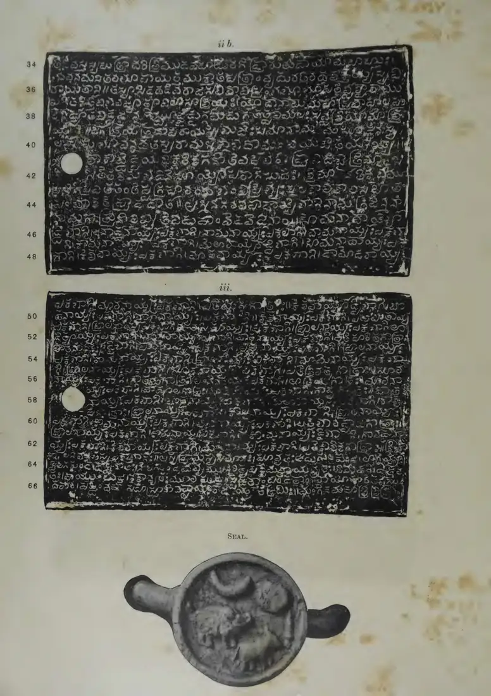

No. 41.—THE GARAVAPADU GRANT OF GANAPATIDEVA ; ŚAKA 1182.
This grant is engraved on three copper-plates which were forwarded to the Assistant Archaeological Superintendent for Epigraphy, Southern Circle, Madras, in the year 1916, by M. R. Ry. M. Ramakrishnakavi, M.A., late of the Government Oriental Manuscripts Library, Madras, who had obtained them on loan from M. R. Ry. T. Achyuta Rao Pantulu, M.A., Deputy Inspector of Schools. No definite information as to their discovery is available. Their contents have been reviewed in the Madras Epigraphical Report for the year 1916-17.1 The plates have since been acquired for the Madras Museum and deposited there.
The plates are oblong in shape and are held together by a copper ring, the ends of which are rivetted into the back of a circular seal. They measure 9 by 5 and are about in thickness. The ring and the seal have a diameter of 3 and 2" respectively. The ring had not been cut when the plates came up for examination. They contain four faces of writing in all, the first and the last plates being engraved on their inner sides only. The entire set with ring and seal weighs 274 tolas. On the seal, on a counter-sunk surface, are engraved in relief (1) the symbols of the Crescent and the Sun at the top; below these (2) a boar2 facing the proper left with a dagger placed in its front with the point upwards, and (3) a cow facing the proper left at the bottom.
The inscription is composed in the Sanskrit language and written in the Telugu characters of the period to which it belongs. The invocatory and narrative portion of the record (lines 1 to 45) consists of 21 verses. This is followed, in lines 45 to 63, by the categorical enumeration of the donees with their gōtras and their shares. Lines 63 to 65 give the boundaries of the gift village. These are followed, in lines 65 and 66, by the usual minatory verse beginning with ‘सदत्तां’ and the closing benediction ‘मंगळमहाश्रीश्रीः’. On the whole, the inscription is engraved very carefully. The position of the anusvāra is not uniform. In some cases it is placed at the proper left top corner of the letter to which it belongs as in the later Chālukyan records, while in a few others it is placed by the side of the letter as at the present day. The anusvāra takes the place of the nasal before all consonants. But in some places it does not; e.g. diśanti in line 1 and nirvvēśayanti in line 2. The consonant following the rēpha is doubled. The doubling of the letter ṇa is effected by adding a subscript n to ṇa, e.g., varṇna in line 23; vistīrṇna in line 26, etc.
The word vēlī used for vēlī in verse 1 suggests the influence of the vernacular pronunciation which has a tendency to substitute la for the Sanskrit la. The expression ‘Garavapādākhyē’ in verse 21 seems to have been employed inadvertently as in Telugu, the correct form Garavapādākhyē being somewhat difficult to pronounce.3
The composition is marked by force and fluency of style. The author's diction in some places reminds us of that of some great poets. Our mind is drawn to the beautiful expression of Kālidāsa: ‘सौदामन्या कनकनिकषस्त्रिग्धया’ in the Mēghadūta, by his phrase ‘सौदामन्या कनकनिकषच्छायया’ employed in verse 64.
1 Appendix A, No. 4 and page 122, paragraph 30.
2 No. 328 of the Madras Epigraphical Collection for 1905 belonging to King Pratāparudra of this family has the figure of a boar carved above it. The Boar emblem of the Kākatiyas has been noticed by Prof. Hultzsch (above, Vol. XII, p. 189). See also copper-plate No. 17 of Nellore Inscriptions in which the ‘Boar’ emblem is carved.
3 [The name can very well be Garavapāda or pādā, as given in the inscription, unless the subscript v was left out by the engraver.—Ed.]
4 [He might have taken it from the Mēghadūta itself.—Ed.]
This inscription is the second copper-plate record, hitherto found, of the Kākatiya dynasty. The one already discovered also belongs to the time of King Gaṇapati and is published in the Nellore Inscriptions.1 It is dated in the Śaka year 1176 corresponding to the cyclic year Ānanda and is thus six years earlier than the grant under notice.
In verses 1 to 6 are praised in order Vighnarāja (i.e., Vināyaka), Varāha, Sarasvatī,2 the moon-crest of Śambhu, the Lord of Ambikā (i.e., Śiva), and Vishṇu. Verse 7 gives the description of the Lotus coming out of the navel of Vishṇu from which was born the four-faced Brahmā (verse 8). Verses 9 and 10 state that from his eye came Āditya (i.e., Sun) and from him came Manu who was a king that regulated the castes (varṇas) and (their) duties (dharmas) etc. The genealogy from Āditya given in the record is as follows:—

Kalikāla-Chōla is stated to have gone to the Dakshiṇāpatha in the course of a hunting expedition (verse 11). Alighting there upon a famous town called 'Kākati' he pitched his extensive camp near it (verse 12). King Durjjaya who had the epithet Raṇa-durjaya3 (invincible in war) was the next notable member of this family by whom the line of the Kākati kings was first established (verse 13). Then is mentioned (verse 14) King Prōla i.e., Prōla II according to the genealogy of the Mōṭupalli record of Gaṇapatidēva.4 His son was Rudra (verse 15) who was succeeded by his younger brother Mahādēva whose elephants made a breach in the ramparts of the residence of the Sēvuṇa (king)5 (verse 16). His son was King Gaṇapatidēva whose
1 Copper-plate No. 17.
2 The expression actually used is 'Sārasvatākhyam-tējah' by which it is clear the author is glorifying the goddess Sarasvatī.
3 A Copper-plate grant of about the 7th century A.D. (No. 6 of Appendix A to the Epigraphical Report for 1916-17) mentions Mahārāja Raṇa-durjaya as the founder of the family to which king Prithivi-Mahārāja of the record belonged. He belonged to the Kāśyapa-gōtra. It may be recalled here that Karikāla-Chōla and his descendants claimed to belong to this gōtra and that the long inscription at Malkapuram refers to the Kākatiyas as Durjaya-Kshatriyas (Epigraphical Report for 1916-17, page 122, para. 32).
4 Ep. Ind., Vol. XII, page 189. Prof. Hultzsch remarks here that 'the first king of this dynasty, Prōla I is not mentioned in any other Kākatiya inscription.' It may, however, be noted that he is the earlier of the two 'Prōlas' mentioned in No. 107 of the Madras Epigraphical Collection for 1902. From No. 204 of 1905 it is seen that Prōla II had two other sons, viz., Harihara and Gaṇapati, not generally known. Of these Gaṇapati probably died at an early age.
5 This must be the Dēvagiri Yādava king Bhillama who reigned from A.D. 1187 to 1191 or Jaitugi I who reigned from A.D. 1191 to 1210 (Bom. Gaz., Volume I, Part 2, page 519). Mahādēva's latest year would be A.D. 1197 or 1198.
exploits were great (verse 17). His minister was Dēvarāja1 who was famed for his wide charities (verse 18). He had four sons through his wife Lakshmī; they were respectively called Rāma, Tikka,2 Mainchaya and Bētaya (verse 19). In the Śaka year 1182, corresponding to the cyclic year Raudra, in the month Chaitra, on the day of the Solar eclipse in the dark fortnight, Tikka, the second of the said four sons, granted the village of Garavapāđu as an agrahāra, to fifty Brahmans of several gōtras3 learned in the Vēdas (verses 20 and 21). The date, according to the late Dewan Bahadur L. D. Swamikannu Pillai's Ephemeris, corresponds to Monday (not given in the inscription) April 12, A.D. 1260. On this day there was a Solar eclipse as stated in the inscription.
The statement that Karikāla-Chōļa fixed his capital at Kākati in Dakshiṇāpatha is not found in any other known record of this dynasty, though Kalikāla (or Karikāla)-Chōļa as an ancestor of the family is mentioned in some. In a few records, however, 'Kākati' is referred to as a place with which its early members were connected. An unpublished epigraph4 refers to Kākati as the 'family city' (kulapura) of this dynasty. Another such epigraph5 refers itself to king 'Gaṇapatidēva of Kākatiyyapura.'
A chief named Kākartya Gunđyana is mentioned in an unpublished copper-plate grant6 belonging to about A.D. 945 as a subordinate of the Eastern Chāļukya king Amma II.7 The family to which the chief belonged is called Sāmantavođđi. The epithet 'Kākartya', which is evidently a variant of 'Kākatya, must, therefore, refer to a place to which the chief belonged. It is thus almost certain that 'Kākati' was an ancient place and the family name Kākati, Kākatya, Kāketa or Kākatiya was based upon the original connection of its members with a town of that name and not upon the worship of any family deity as suggested by Kumārasvāmin8 [Burnell quoted by Fleet.—Ed.] the learned commentator of the Pratāparudrīya. If the latter
1 Dēvarāja was not the only minister of the king for we are told that a certain Śivadēvayya was his Chief Minister (Lives of Telugu Poets by Viresalingam, Old Edition, page 36) who was looked upon as no less than a god. Śivadēvayya must have been identical with the great Śaiva teacher Viśvēśvara-Śiva-Dēśika, the pontiff of the Gōlakī-maṭha and the rāja-guru of three kings among whom was King Gaṇapati (Epigraphical Report for 1917, page 123).
2 The commander Tikka has to be distinguished from his two contemporaries of this name viz., (i) the great poet Tikkana who wrote the latter fifteen parvas of the Telugu Mahābhārata and who is stated to have gone as an ambassador to the Court of Gaṇapati from king Manumasiddhi of Nellūru (Nellore) whose minister he was and (ii) the warrior Tikka, the cousin of the poet, who was the commander of the armies of Manumasiddhi. Siddha, the father of the last was minister under king Tikka, the father of Manumasiddhi (Lives of Telugu Poets, pages 33 to 39). The name Tikka, it may be noted, is a contracted form of 'Tiruk-Kālatti' a Prākrit form of 'Śri-Kālahasti.' The name was taken after that of the popular god Srī-Kālahastiśvara at Kālahasti, Chittoor District, Madras Presidency. See Nellore Inscriptions, A. 7, G. 45, G. 60, etc.
3 Though verse 20 of the inscription states that the village was granted to 'fifty' Brahmans, actually only forty-nine Brahmans received shares. The fiftieth share was granted to Vallabha of Śrikākolanu viz., Śrikākuļam in the Divi tāluk of the Kistna district. This is the god of the place who is known also by the name 'Śrikākuļēśvara' and has been popular from early times (see Madras Epigraphical Collection for 1893, Nos. 136-172). While making grants of agrahāras it was customary for ancient kings to provide shares for the local deities and for the Vēdas chiefly Rīk and Yajus (above, Vol. XVI, p. 253, text line 273 and p. 263). The first eleven recipients of shares are of the Yaska-gōtra which is very rarely met with in these days. Yāska, the author of the Nirukta, was of this gōtra. His patronymic is Paiṅgi in the Anukramaṇi of the Ātrēyī-sākhā (Weber Indische Stvdien, I 71, n; 3396; Vedic Index by Macdonell and Keith, Vol. II, page 23). The Muni Yaska is mentioned in the Āśvalāyana-Śrautasūtra (Uttarārdha) along with Vādhūla, Mauna, Mauka, Śārkarākshi, Sārshṭi, Sāvarṇi, Śālankāyana, Jaimiri and Daivantyāyana, most of whom were founders of gōtras.
4 No. 204 of the Madras Epigraphical Collection for 1905.
5 No. 111 of 1902.
6 No. 1 of Appendix A to the Epigraphical Report for 1916-17.
7 Ivd., page 117 f.
8 Ind. Ant., Vol. XI, p. 12.
were the case the deity would have been invoked or praised at least in a few of the innumerable records of this family. And even if there was such a deity known or familiar to the commentator it must have been called so after the place 'Kākati.'1 There are many instances of the presiding goddess Durgā of a village being called after the village.2
Kānker, the head-quarters of the state of that name, situated immediately to the north of the Bastar State in the Central Provinces was formerly called Kākera, Kākaira and Kākaraya.3 Since epigraphs refer to Kākati as a pura (i.e., city) as noticed above, it is very likely that Kānker, as suggested by its ancient names, was identical with Kākati. The forms 'Kākati' 'Kākatya,' etc. might have, in local pronunciation, taken the forms Kākera (cf. the form Kāketa). The connection of the Kākati kings with Kalikāla-Chōla, who is well-known to South Indian history as a king of about the 6th century A.D., and the story that he fixed his capital at the town of Kākati and the appearance, in the adjoining state of Bastar, of an early (Śaka 983) Chōla Chief Chamdrāditya-Mahārāja4 who calls himself, like the Kākatiyas, a descendant of Karikāla-Chōla, point to the possibility of the said identity. The advent, again, of Annamarāja, the brother of Kākti (i.e. Kākati) Pratāparudra into Bastar, the present ruling family of which is Kākatiya—though curiously enough Sōmavainśi—must have been only a return to the inherited family territory lying here or such territory reconquered and recovered now.5
Among the boundaries of the gift village no village or town is mentioned to help us in its identification. There are villages of the name 'Gārapāđu' in the Guntur and the Sattenapalle taluks of the Guntur district and in the Nuzvid taluk of the Kistna district. From the reported fact of the discovery of the plates near Ellore in the latter district it may have to be identified with the village of Gārapāđu in the Nuzvid taluk.6
TEXT.7
[Metres. Vv. 1, 3 Sragdharā; v. 2 Svāgatā; v. 4, Indravajrā; vv. 5, 18 and 20 Śārdūlavikrīđitam; v. 6 Mandākrāntā; vv. 7-8 Upajāti; v. 9 Hāriṇī; vv. 10, 12-14 and v. 21 Anushṭubh; v. 11 Pushpitāgrā; vv. 15-17 Mālini; and v. 19 Upēndravajrā.]
First Plate.8
- 1 9लक्ष्मीं हस्ते दिशन्ति प्रमदमुपहरंत्यश्चिवेकादुक्लामु-
- 2 व्वीं निर्व्वंशयन्ति प्रतिदिशमचलां कोर्त्तिमानर्त्तयंति । किंचान्यद्य-
- 3 द्यदिष्टं निदधति निखिलं तत्तदग्रे समग्रं नित्यं निर्व्वर्त्यमानाः कुशल-
1 In almost all earlier inscriptions the family name is given as 'Kākati' (see Nos. 213, 244 and 288 of the Madras Epigraphical Collection for 1893).
2 [and vice versa.—Ed.]
3 Vide Nos. 252 and 253 of the Madras Epigraphical Collection for 1908 and Nos. 124, 128, 169, 228 and 229 of the Lists of Inscriptions of Central Provinces and Berar by Hiralal.
4 No. 198 of the Lists of Inscriptions of Central Provinces and Berar and No. 231 of the Madras Epigraphical Collection for 1908.
5 [It is doubtful if philology can allow of such a derivation. Besides, history or rather tradition, goes against it in as much as the Kākatiyas are said to be the descendants of the Pāṇḍava Arjuna and of the Lunar race whereas Karikāla-Chōla and Gaṇapatidēva belong to the solar race.—Ed.]
6 [Line 64 of the text would show that it stood on the Bhāgīrathī. N. P. C.]
7 From ink-impressions kindly lent by the Assistant Archæological Superintendent for Epigraphy, Madras.
8 This side of the plate is marked close to the ring-hole with the Telugu-Kannacla numerical figure for 1.
9 The line commences with a spiral which may stand either for Om or for Śrī. The latter is more probable since even to-day the orthodox practice in the Telugu country is to commence any writing with the letter Srī or an ornamental flourish representing it. [See above Vol. xvii, p. 352 f.n.—Ed.]
4 'कुलशहा विन्नराजप्रणामाः ॥ [१*] भूतये भवतु वस्म वराहो भू-
5 र्भभुवःस्वरधिदैवतमेकं । एकदापि यजनप्रवणानां भूपतित्वम्-
6 पपादयते यः ॥ [२*] तेजस्वारस्वताख्यं हृदयसरसिजे वः
7 ²प्रकाशेच शीतज्योतिर्मुक्तासुधांभोनिदि³गगनधुनोचंदनान-
8 ⁴दनीयं । यस्मिन् संवित्वमुद्रे स्फुरति किमपरं निर्भरन्निस्सरं-
9 ति स्फायन्मा[धु]र्यधृय्याः परिमक्तिदिशः श्लोककस्रोललेखाः ॥ [३*]
10 अज्ञ[र]तवृद्धिक्षयसंविभागामराहुदंष्ट्रापरिभूतिभूमिं । अ-
11 [मु]क्तमौग्धां सुकुटेन शंभोस्संभावितां ध्यायत चंद्रलेखां ॥ [४*] तं सं-
12 ⁵भायरांबिकासह[च]रं सर्वेपि दर्व्वकिरालंकारांगमनंगदर्पदमनं
13 श्रोचंद्र[चू]डामणिं । इ[च्छ]। यस्य चराचरच्छलभवह्वेविध्यलोकत्व-
14 [यो]ष्टिस्थित्युप[सं]हृतिक्रममयक्रीडाकृतामेडना ॥ [५*] लक्ष्या चं-
Second Plate ; First Side.
15 चत्कनकनिक[ष]च्छायया चारुवक्षासौदामन्या गतचपलतासौम्य-
16 ⁶एवांबुवाहः । निर्मर्य्यादद्विपरथहयोद्दिक्त⁷ताटक्सम्[ध्यै]⁸ भू[त्यै] नि-
17 त्यं भवतु पुरुषः पुं[ड]रोकेक्षणो वः ॥ [६*] अनातपायत्तनि[ज]प्रबोधं³मचं-
18 द्रिकासंपदधीननिद्रं । सिष्टक्षतो विष्टपमाविरासोदमुथ नाभेररविंदमेकं ॥
[७*] त-
19 [स्मा]त्सरोजादुदभूत्स्वयंमृस्तत्साम्यरम्यैर्व्वदनैश्वतुर्भिः । दिशश्चतस्रो यु-
20 [ग]पद्विवृखन् त[घै]व¹०सांगं चतुरोपि वेदान् ॥ [८*] अजनि नयनात्तस्या-
दित्यस्त्रिलोक-
21 विभूषणं तिमिर[प]टलद्रोहिज्योतिःपरिष्कृतमंडलः । कमलमिव यः का-
22 ल्ये लोकं विकासयते परैरखिलममलैरष्टाभिहिंग्दलैरभितो वृतं ॥ [९*]
तस्मात्मनुरभू-
23 द्राजा ¹¹वर्णधर्मनियामकः । श्रावनीयः क्षितिभृतां देवानामिव वा-
24 सवः ॥ [१०] तदभिजनजनिस्ततो [ध]रित्रीमशि[ष]दिमां कलिकाल-
चोक्तदेवः [¹*]
25 दिशि दिशि मृगयाच्छलेन खेलन्नुपगतवानय दक्षिणापधं¹² सः ॥ [११*]
पुरं स
¹ Read कुलग्रह.
² Read प्रकाशेत.
³ Read °निधि.
⁴ Read °न्द.
⁵ Read °भावयतां.
⁶ Read °येवांबु.
⁷ Read °द्रिक्त.
⁸ Read °सृश्ये.
⁹ Read °धम्मचन्द्रि.
¹⁰ Read तथैव [and सांगांश°—Ed.]
¹² Read °पर्य.
¹¹ Read वर्णं [or वर्णं°.—Ed.]


26 काकतिरिति प्रख्यातं तत्र भूपतिः । प्राप्या[त्म]नस्तद्दिस्तीर्णं1 स्कंधावारम-
कल्पय-
27 त् ॥ [१२*] आसीत्तदन्वये रा[जा] दुर्ज्ञयो रणदुर्ज्ञयः । यदुपज्ञं वदं-
त्यस्य वं-
28 श्यान् काकतिभूम्यतः ॥ [१३*] तत्संततो समुदभूत्प्रोलराजाभिधो नृपः ।
29 प्रणामविमुखारातिराजन्यगजकेसरो ॥ [१४*] अलमक्षत तदीयो नंदनसं-
30 ततिं तां शमितसकललाकोपद्रवो रुद्रदेवः । विदधदरतिमंतर्यंत्प्रता-
31 पौर्व्वतापः प्रतिनृपजलराशीनंजसा संजहार ॥ [१५*] अशिषदखिलमु-
र्व्वीचक्रमा-
32 चक्रवालात्तदनु तदनुजन्मा श्रीमहादेवराजः । यदिभरदनवि[द्वः]
33 २से[व्य]णावासवप्रः शरवणा(ण)भवभिन्नं निङ्गुते क्रौचमद्रिं ॥ [१६*] अथ गणप-
Second Plate ; Second Side3.
34 तिदेवस्तस्य पुत्रो धरित्रीमुदवहृदुरगेंद्रास्तुदायामवाहः ।
35 भुवन(भुव)मनितरभूपायत्तमुक्तातपत्रां व्यधुरतिरथशक्तेर्यस्य वी-
36 रायितानि ॥ [१७*] तस्यासीदथ देवराजसचिवो विसंभभूर्भूपतेर्विश्वाशामु-
37 खगीतकोर्त्तिविभव[ज्यो]त्क्षाविलाप्ताश्रयः । यो दानांबुमहाप्रवाहलह-
38 रोनिर्जूतविहज्जनस्फूर्ज्जह्द्गर्गमदुर्गतत्वशमलः सर्वश्रियामाश्र-
39 यः ॥ [१८*] जगत्रय४त्राणपराय[ण*]स्य भु[जै]ः समाना मधुसूदनस्य ।
40 लक्ष्यामभूवन्नथ तस्य रामस्तिक्काभिधो मंचयवेतयाख्यौ ॥ [१९*]
41 शाकाब्दे द्वयदिक्करोशगणिते वर्षे च रौद्राभिदे५ चैत्रे मासि
42 सितेतरे शुभदिने सूर्योपरागे सुधोः । श्रीमान् तिक्कचमू-
43 पतिः प्रविततं तेष्वग्रहारं शुभं विप्रेभ्यः फलशालिशालिसहितं
44 पंचाशते प्राददात् ॥ [२०*] अस्मिन् गरवपाडाख्ये6 भागिनामग्रजन्मनां ।
45 नामगोत्राणि लिख्यंते विदुषां वेदवेदिनां ॥ [२१*] सोमनाथार्यो
46 द्विभागो । जनार्दनार्यः एकभागो । नामनार्यः एकभागो । वामनार्यः
एकभा- ।
1 Read °स्तीर्णं [or °स्तीर्णं —Ed.]
2 Read सेवणा०.
3 This side of the plate is marked with the Telugu-Kannada numerical symbol for 2.
4 Read जगत्रय०.
5 Read °पाडाख्ये.
6 Read रौद्राभिधे.
47 गी । कामनाय्यः एकभागी । मैलाराय्ये द्विभागी । सोमनाथ । य्यं
एक-
48 भागी । केशवाय्यः एकभागी । मा[त]वाय्यः एकभागी । दामोदराय्यः[:]
Third Plate.1
49 एकभागी । मारनाय्यः एकभागी । एते यस्क्रगोत्राः ॥ केशवाय्ये
द्विभागी । चो-
50 डनाय्यः एकभागी । नागनाय्यः एकभागी ॥ (i) केशवाय्यः एकभागी ।
एऽऽपोताय्यं-
51 [:] एकभागी । प्रोलनाय्यं एकभागी । [i] नर[सि]हाय्यः एकभागी ।
प्रोलनाय्यः एकभागी [i*] आ-
52 दिलाय्यः एकभागी । भास्क्राय्यः ए[क*]भागी । पोतनाय्यः एकभागी ।
एते हरितगोत्राः [॥*]
53 पोतनाय्ये द्विभागी । चा[व]नाय्यः एकभागी । अप्पनाय्यं एकभागी ।
प्रोलनाय्यः
54 एकभागी । कामनाय्यः एकभागी । प्रोलनाय्यः एकभागी । मामिनाय्यः
एकभा-
55 गी । प्रोलनाय्यः एकभागी । सूरनाय्यः एकभागी । एते श्रोवत्सगोत्राः ॥
सूर-
56 नाय्यः एकभागी । गौतमगोत्रः ॥ अंनिनाय्यः एकभागी । आत्रेयगोत्रः ॥
मारना-
57 य्यः एकभागी । वाधूलगोत्रः ।2 नंदनाय्यः एकभागी । गार्ध्यगोत्रः3 ॥
पोत-
58 नाय्यः एकभागी । बोहनाय्यः एकभागी । मैलाराय्यः एकभागी ।
[एते*] काश्य-
59 पगोत्राः ॥ प्रोलनाय्यः एकभागी । कोल्लनाय्यः एकभागी । प्रोलनाय्यः
60 एकभागी । कोमनाय्यः एकभागी । चीवनाय्यः एकभागी । एते
भारद्वाजगोत्राः ॥
61 प्रोलनाय्यः एकभागी । कोमनाय्यः एकभागी । कोमनाय्यः द्विभागी ।
गोवर्द्धना-
1 The plate is marked with the Telugu numerical figure for 3 near the ring-hole.
2 [Danda is unnecessary.—Ed.]
3 Read गार्ग्यगोत्रः.
62 य्यः एकभागी । केशवार्यं एकभागी । मे[ड]नार्यः एकभागी ।1
एते कौशिकगोत्राः ॥ श्रीका-
63 कोलनिवल्लभस्य एको भागः ॥ अस्य ग्रामस्य सोमानः । पूव्वतः2
ऊडुगुलकुंट । आग्नेयां
64 बेलगकुंट । दक्षिणतः।3 नेलगुंटमध्यमु । 'नैरित्यपश्चिमवायव्यतः । भीमर[शी] ।3
उत्तर-
65 तः ।3 पायु[पु]ट्ट । ईशान्ततः मूरपुट्ट ॥ स्वदत्तां परदत्तां वा यो हरेत
वसुं-
66 धरां । षष्टिं वर्षसहस्राणि विष्ठायां जायते क्रिमिः5 ॥ [२२*] मंगक-
महाश्रीश्रीः ॥
TRANSLATION.
(Verse 1). Salutations to Vighnarāja, offered every day, being the family home of prosperity, bestow wealth on hand, convey great pleasure, cause the enjoyment of the earth which wears the silk garment of the sea-coast, set a-dancing everlasting fame in every quarter of the globe and also place before (us), exhaustively, everything that is desired !
(V. 2). May that Varāha (i.e., the Boar incarnation of Vishṇu), the sole presiding deity of (the three worlds) Bhūḥ, Bhuvaḥ and Svaḥ, who bestows royalty even on those that were once devoted to sacrifice6, be for your prosperity (i.e., bless you)!
(V. 3). May that Lustre of Learning, shine in the lotus of your heart, which is delightfully enjoyable like the Cool-rayed (Moon), the pearl, the nectar-sea, the celestial river and the sandal! And what more? While this sea of knowledge heaves up, series of the waves of verses flow forth unceasingly, laden with increasing sweetness, perfuming the quarters.
(V. 4). Meditate upon that streak of the Moon which has not shaken off its coyness (i.e., remains tender), which is honoured by the crown of Śambhu, which knows not the vicissitudes of growth and decay and which is not subject to humiliation by the fangs of Rāhu !
(V. 5). Worship you all the Companion of Ambikā, the glorious Moon-crested One (i.e., Śiva), whose body is adorned with snakes, who destroyed the pride of Anaṅga (i.e., Cupid) and whose volition is (the cause of) the repeated sport consisting of the order of creation, protection and destruction of the three worlds (with their) duality born of the apparent (phenomena of) the movable and the immovable !
(V. 6). May the Lotus-eyed Purusha (i.e., Vishṇu) whose chest is beautiful with (the goddess) Lakshmī of sparkling hue like that of the golden streak on the touchstone (and who is) compar-
1 [Rules of sandhi are not observed in this list.—Ed.]
2 Read द्रव्यंतः.
3 [The daṇda is to be omitted.—Ed.]
4 Read नेष्टंत्य°. 5 [Read क्रमिः—Ed.]
6 The reference here might be to the story of Varāha-Vishṇu having raised to royalty the Dēvas, who were devoted to sacrifices, having vanquished the Asura Hiraṇyāksha. Or it may be to the fact of His bestowing royal glory upon the descendants of the Munis, Mānavya and his son Hārita, i.e., the Chālukyas, who had the Boar emblem, probably on this account. [ अपि would show that there is no such reference. The idea seems to be that Varāha bestows royalty even on those who worship him only once.—Ed.]
able to the cloud (lit. with lighting), that is void of fickleness and handsome, be ever for (i.e., grant) that prosperity of limitless increase such as overflows with elephants, chariots and horses !
(V. 7). From the navel of this (Vishṇu) who desired to create the world there appeared a lotus, which did not depend upon the Sun for its awakening (i.e., blossoming) and which did not depend upon the splendours of the moon-light for its sleep (i.e., closure).
(V. 8). From that lotus arose the Self-born (Brahmā) simultaneously determining the four quarters with the four faces beautiful! like itself (i.e., the lotus) and even so (i.e., simultaneously) revealing the four Vēdas with their branches (aṅgas).
(V. 9). Of his eye was born the Sun, the ornament of the three worlds, whose round form is adorned with the light which is hostile to the mass of darkness and who opens (i.e., awakens), at the morn, the entire world (which is) like a lotus closed in all round by the eight petals, viz., the eight quarters.
(V. 10). From him was born the king Manu, the regulator of castes and (their) duties, who was praiseworthy among the lords of the earth like Vāsava (i.e., Indra) among the Dēvas.
(V. 11). Then (i.e., in course of time) ruled this earth Kalikāla-Chōlādēva, who had his birth in that noble race (of Manu). Sporting, for the sake of hunt, in the several quarters, he reached Dakshiṇāpatha.
(V. 12). Reaching there the well-known town called Kākati, the king fixed his extensive camp at that extensive place.
(V. 13). In his family was born King Durjjaya, unconquerable in war (raṇa-durjaya), whose foundation (people) say that the Kākati kings, born in his race, were.
(V. 14). In his line was born the king called Prōlarāja, who was a lion to the elephants, viz., the hostile kings disinclined to do homage (to him).
(V. 15). (Then) adorned that race, his son Rudradēva, who removed all sufferings on earth and the sea-fire of whose prowess, causing internal (i.e., mental) distress, quickly consumed the oceans of hostile kings.
(V. 16). Then, his younger brother, the glorious Mahādēvarāja ruled the entire circle of the earth right up to the Chakravāla mountain, the residential rampart of the Sēvuṇa (king) breached by the tusks of whose elephants, eclipses the Krauñcha mountain cleft by Śaravaṇa-bhava (i.e., Kumāra).
(V. 17). Then bore (i.e., ruled) the earth, his son, Gaṇapatidēva, who had arms long enough to give pain to the Lord of serpents (i.e., Ādiśēsha) and the exploits of him, who had the strength of an atiratha (i.e., super-chariot-warrior), rendered the earth (with its royal) pearl umbrella subject to (the authority of) no other king.
(V. 18). Now, that king had a minister (named) Dēvarāja, who possessed his confidence, who was the repository of the glory of the moon-shine of great fame, sung by the mouths of the several quarters of the globe and who removed the dirt, which was the insurmountable poverty of learned men, with the waves of the big streams of water (poured out on the occasions) of gifts and who was the refuge of all (kinds of) prosperity.
(V. 19). To him were born, through (his wife) Lakshmī (four sons) viz., Rāma, Tikka, Marinchaya and Bētaya, resembling the (four) arms of Madhusūdana (i.e., Vishṇu) who is occupied with the protection of the three worlds.
(V. 20). In the Śaka year counted by two, the elephants of the quarters (i.e., eight) and Iśas (i.e., eleven), i.e., 1182, in the (cyclic) year called Raudra, in the month Chaitra, on the auspicious day (in the) dark (fortnight) on (the occasion of) the solar eclipse, the wise and the illustrious general Tikka, of those (four brothers), gave, to fifty1
1 See f. n. 3 on p. 348 above.
| No. | Name. | Share or shares. | Gōtra. | N. |
|---|---|---|---|---|
| 1 | Sōmanāthāryya . | 2 | ||
| 2 | Janārddanāryya . | 1 | ||
| 3 | Nāmanāryya . | 1 | ||
| 4 | Vāmanāryya . | 1 | ||
| 5 | Kāmanāryya . | 1 | ||
| 6 | Mailārāryya . | 2 | Yaska. | |
| 7 | Sōmanāthāryya . | 1 | ||
| 8 | Kēśavāryya . | 1 | ||
| 9 | Mātavāryya (Mādhavāryya?) | 1 | ||
| 10 | Dāmōdarāryya . | 1 | ||
| 11 | Māranāryya . | 1 | ||
| 12 | Kēśavāryya . | 2 | ||
| 13 | Chōđanāryya . | 1 | ||
| 14 | Nāganāryya . | 1 | ||
| 15 | Kēśavāryya . | 1 | ||
| 16 | Ērapōtāryya . | 1 | ||
| 17 | Prōlanāryya 2 . | 1 | Harita. | |
| 18 | Narasimhāryya . | 1 | ||
| 19 | Prōlanāryya . | 1 | ||
| 20 | Ādityāryya . . | 1 | ||
| 21 | Bhāskarāryya . | 1 | ||
| 22 | Pōtanāryya . | 1 | ||
| 23 | Pōtanāryya . | 2 | ||
| 24 | Chāvanāryya . | 1 | Srivatsa. | |
| 25 | Appanāryya . | 1 |
| o. | Name. | Share or shares. | Gōtra. |
|---|---|---|---|
| 26 | Prōlanāryya . | 1 | |
| 27 | Kāmanāryya . | 1 | |
| 28 | Prōlanāryya . | 1 | Śrīvatsa. |
| 29 | Māmēnāryya . | 1 | |
| 30 | Prōlanāryya . | 1 | |
| 31 | Sūranāryya . | 1 | |
| 32 | Sūranāryya . | 1 | Gautama. |
| 33 | Aṅnēnāryya . | 1 | Ātrēya. |
| 34 | Māranāryya . | 1 | Vādhūla. |
| 35 | Naṅdanāryya3 . | 1 | Gārgya. |
| 36 | Pōtanāryya . | 1 | |
| 37 | Bōddanāryya . | 1 | Kāśyapa. |
| 38 | Mailārāryya . | 1 | |
| 39 | Prōlanāryya . | 1 | |
| 40 | Kōllanāryya . | 1 | |
| 41 | Prōlanāryya . | 1 | Bhāradvāja. |
| 42 | Kōṅmanāryya . | 1 | |
| 43 | Chauvanāryya . | 1 | |
| 44 | Prōlanāryya . | 1 | |
| 45 | Kōṅmanāryya . | 1 | |
| 46 | Kōṅmanāryya . | 2 | Kauśika. |
| 47 | Gōvarddhanāryya | 1 | |
| 48 | Kēśavāryya . | 1 | |
| 49 | Mēđanāryya . | 1 | |
| 50 | Vallabha of Śrīkākōlanu. | 1 | This is a god. |
1[The plate gives Garavapāđa (or 'pāđā.' See f. n. 5 on p. 346 above).—Ed.]
2[Prōla (or Pōla) seems to be connected with Pōlēri or Pōlēramma which is a corruption of Prōlēlamma 'the goddess that presides over the city'. The elision of r accounts for forms like Pōla, Pōlēri and Pōlimēra, etc.—K. V. S.]
Brahmans, an extensive and prosperous a rahāra (i.e., Brahman village) possessing fruitful paddy (-fields).
3Read Nandanārya.
(V. 21). (Hereunder) are written the names and the gōtras of the learned Brahmans versed in the Vēdas and holding shares in this (agrahāra) called Garavapāđu.1
Ll. 62f. The boundaries of this village (are):—
On the east : Üđđugulakuňta1;
On the south-east : Vēlagakuňta1 ;
On the south : the centre of Nēlaguňta1 ;
On the south-west, west and north-west : (the stream) Bhimarathi ;
On the north : Pāyurīputṭta2;
On the north-east : Mūraputṭta2.
[V. 22 is the usual minatory verse warning one against the sin of revoking gifts of land made by oneself or by others.]
(L. 65). May there be three-fold prosperity, auspicious and great !
1 This must have been a pond.
2 This must have been an ant-hill.
INDEX1.
1 Mr. G. S. Ramanathan, B. A., of my office has proved very useful in the preparation of this index.
| PAGE | |
|---|---|
| a, accusative plural ending in, . . . | 182 |
| a, initial form of—, . . . | 146 |
| ā, used for yā, . . . | 219 |
| Abhaya, Chōla k., . . . | 28, 29 |
| Abhaya, sur. of Kulōttuṅga II (?), . . . | 68 |
| Abhayagiri, Buddhist sect, . . . | 331 n. |
| Abhayagirimahāvihāra, . . . | 337 |
| Abhayagiri-vihāra, . . . | 332, 333 |
| Abhayagiri monastery, . . . | 338 |
| abhitvaramāṇa, official, . . . | 306 |
| Achchaviṇṇa-Chaḍaṅgavi, m., . . | 122, 124 |
| Achchipōṭi, queen, . . . | 309, 310 |
| Achyutapuram plates of Indravarman, . . | 308 |
| adḍa-chinna, coin, . . . | 173, 175, 176 |
| Adhikaraṇa Sāraṇaṇ, m., . . . | 334 |
| adhikārika, official, . . . | 249 |
| Adhirājēndra, Chōla k., . . . | 30, 332 n. |
| Adhirājēndradēva, Chōla k., . . . | 332 |
| Aḍiga! Gaṇḍaṇ Māṛambāvai, probably queen of Nandivarman III, . . . | 118 |
| Āditya, m., . . . | 213, 214, 217 |
| Āditya alias Kōdaṇḍarāma, Chōla k., . . | 27 |
| Āditya or Ādityavarman, Chōla k., . . | 23, 42, 52 |
| Āditya I, Chōla k., . . . | 23, 24, 118 |
| Āditya-Bhōgika, m., . . . | 308, 310, 311 |
| Āditya-Mañchin, m., . . . | 308 |
| Ādityāryya, m., . . . | 352, 355 |
| Āditya-Sēna, k., . . . | 81 |
| Ādityēśvara, s. a. Kōdaṇḍarāmēśvara, . . | 23, 24 |
| ādya-pīṭha, . . . | 241 |
| Agastya, sage, . . . | 109, 113, 212, 217 |
| Agastyēśvara, god, . . . | 216, 218 |
| Agastyēśvara, te., . . . | 170, 212, 213 |
| Aghōra (Śiva), . . . | 197, 199 |
| Agila, m., . . . | 326, 327 |
| agnihōtra, rite, . . . | 238, 250, 257 |
| Agniśarmma-tTiruvēdi (Trivēdin), m., . | 122, 124 |
| Agniśarmman, m., . . . | 59, 60 |
| agrahāra, . . . . | 216, 223, 231, 234, 235 |
| Āhavamalla, epithet of Sōmēśvara I, . . . . | 27, 46, 174 |
| Āhavamalla (Sōmēśvara I), Chāļukya k., 25, 54, 55 n., | 173, 176 |
| Āhavamallakula-Kāla, title of Vīra-Rājēndra, . . . . | 54 |
| Aīchadēva, m., . . . . | 294 |
| Aīchula, m., . . . . | 294 |
| Aihoļe inscription,. . . . | 92 |
| Aimpaņaichchēri, s. a. Aimbuņaichchēri, part of Coñjeeveram, . . . . | 119 |
| Aimpaņaichchēri (Aimbuņaichchēri), vi., 116, 122, 124 | |
| Ajchha(jjavara) Nākimayya s.a. Nākimayya, . . . . | 185, 186, 188 |
| Ajjava, family, . . . . | 183, 184, 187, 19², 196 & n. |
| ājñā (executor), . . . . | 309, 310, 311 |
| ājnapti (executor), 4, 7, 11, 14, 57, 58, 60, 118, 228, 233, 235, 259, 314, 316 | |
| Akalaņkaņ, Chōļa k., . . . . | 29 |
| Akālavarsha, Rāshṭrakūta k., . . . . | 244, 252 |
| Akkataņgēra-bhāvi, well, . . . . | 171 |
| Ākshapāda or Nyāya, school, . . . . | 176 n. |
| ākshapaṭalika, official, . . . . | 221, 226 |
| aksha(ś)ālin . . . . | 298 |
| akshaśālika, . . . . | 285, 295, 296 |
| akshaśālin, goldsmith, . . . . | 312, 313 |
| ākshayanī-dharman, . . . . | 61, 63 n. |
| Alakā or Alakāpurī, city of Kubēra, 174, 177, 197, 198 | |
| Ālāļara Nāgadēvayya, m., . . . . | 192, 195 |
| Alamaņda plates of the year 304, . . . . | 311, 312 |
| Ālambākkam, s. a. Ālappākkam, . . . . | 118 |
| Ālambākkam, vi., . . . . | 119 |
| Alamvimahāpura, . . . . | 219, 221, 223 |
| Ālaņguđi, vi., . . . . | 166 |
| Ālaņguđi-sthala, di., . . . . | 165, 167 |
| Alāpa, di., . . . . | 219, 223 |
| Ālapāka-Bōļ, . . . . | 2, 4 |
| Ālāpagrāma, vi., . . . . | 300 |
| Alāpa-pattala, di., . . . . | 221 |
| Ālappākam, vi., . . . . | 123, 124 |
| Ālappākka-Vijaiyanallūlāņ, m., . . . . | 116, 118, 121 |
N. B.—The figures refer to pages; n. after a figure, to footnotes; and add. to the additions on pp. vii to x. The following other abbreviations are used:—ch.=chief; co.=country; di.=district or division; do.=ditto; dy.=dynasty; E.=Eastern; k.=king; m.=man; mo.=mountain; ri.=river; s. a.=same as; sur.=surname; te.=temple; vi.=village or town; w.=woman; W.=Western.
| Allāla-Bhaṭṭa, m., | . | . | . | 161, 165, 164 |
| alphabets— | ||||
| Brāhmī, | . | . | . | 158, 159, 317 |
| Grantha, | . | . | 5, 21, 22, 115, 331 | |
| Gupta Brāhmī, | . | . | . | 18 |
| Kannaḍa or Kanarese, 138, 171, 178, 182, 189, 196, 199, 201, 205, 206, 207, 208, 212 | ||||
| Kharōshṭhī, | . | . | . | 16, 20, 262 |
| Nāgarī, | . | 74, 100, 128, 219, 224, 284, 320 | ||
| Nandi-Nāgarī, | . | . | . | 138, 160, 165 |
| Old Kanarese, | . | . | . | 172 |
| Pallava-Grantha, | . | . | . | 146 |
| Tamiļ, | . | . | 5, 21, 22, 115, 138, 331 | |
| Telugu, | . | . | . | 227, 346 |
| Telugu-Kannaḍa, | . | . | . | 165 |
| Vaṭṭeļuttu, | . | . | . | 340 |
| Āmalapautika-grāma, vi., | . | . | . | 62, 63 |
| Amarāvatī pillar inscription, | . | . | . | 148 |
| Amarēśa or °śvara (Indra), | . | . | . | 41 |
| amātya, official, | . | . | . | 306 |
| Ambarīsha, myth. k., | . | . | . | 76, 78 |
| Amma (II) or Ammarāja II, Chāļukya k., 227, 231, 232, 233 & n., 234 & n., 315, 348 | ||||
| Ammarāja (I), Chāļukya k., | . | . | . | 229 |
| Amnēnāryya, m., | . | . | . | 352, 355 |
| Amōghakalaśa, sur. of Vidyādharabhañjadē- va, | . | . | . | 285, 286, 287, 297 |
| Amōghavarsha I, Rāshṭrakūṭa k., 105, 235, 237, 238, 240, 241 & n., 242, 246, 247, 248, 249, 251, 253, 254, 255, 256 | ||||
| Amōghavarshadēva, s. a. Amōghavarsha I, | . | . | . | 257 |
| Āmōhinī votive tablet of the year 72, | . | . | . | 272 |
| Amudasāgara or Amudasāgaramuni, author and Jaina teacher, | . | . | . | 64, 65, 67, 68, 69 |
| Amvasarasarā (=Ambasarabhiṭṭa (?)), vi., | . | . | . | 300 |
| Anādiyuvan (Śiva), | . | . | . | 140 |
| Anaṅga (Cupid), | . | . | . | 350, 353 |
| Anantakanṭha-paṇdita, m., | . | . | . | 299 |
| Anantapālarasa, m., | . | . | . | 189, 191, 193 |
| Anantavarman, Gaṅga k., | . | . | . | 312 |
| Anapāya, Chōļa k., | . | . | . | 68 |
| Anapāya, sur. of Kulōttuṅga II (?), | . | . | . | 68 |
| Ānartta, co., | . | . | . | 101, 104, 108, 112 |
| ānatti (ājñaptī), | . | 7, 8, 11, 14, 116, 121, 123, 259 |
| Aṇđava, family, | . | . | . | . | 290 |
| Aṇđēki, s. a. Addanki ?, | . | . | . | . | 228 |
| Aṇđēki, vi., | . | . | . | 228, 232, | 234 |
| Andhakēśvara, god, | . | . | . | . | 189 |
| Andhakēśvara, s. a. Madanēśvara,, | . | . | . | 189 | |
| Andhakēśvara (Bhīmēśvara), te., | . | . | . | 170, | 171 |
| Andhāsura (Aṇdhāsura), god, 185, 186, 188, 189, 190, 191, 192, 193, 194, 195, 196, 205, 206 | |||||
| Andhāsura, s. a. Andhakēśvara, te., | . | . | . | 170 | |
| Āndhau inscriptions of Rudradāman I, | . | . | . | 339 | |
| Āndhra, co., | . | . | . | 104, 105, 108, | 112 |
| āndhraka, | . | . | . | 306 | |
| Ānduliyā (Andoolea), vi., | . | . | . | 62 | |
| Aṁgiras or Aṁgiras, sage, 6, 10, 13, 116, 120, 123, | 150, 151 | ||||
| Aṇījuvaṇṇam, | . | . | . | 70 | |
| Aṇmaṇaṁguru or Aṇmaṇaṁguru, vi., | 228, | 232, | |||
| 234, | 235 | ||||
| Annadā-maṁgala, work, | . | . | . | 62 | |
| Annamarāja, Kākatīya prince, | . | . | . | 349 | |
| Aṇṇīgeri inscription, | . | . | . | 201 n. | |
| An-si (Parthia), co., | . | . | . | 276, 278 | |
| āntahpurika, official, | . | . | . | 221, 226 | |
| Antirigām, vi., | . | . | . | 302 | |
| Antirigām plates of Yaśabhaṇjadēva, | 283, | 284, | 302 | ||
| Āntrōli-Chhārōli copper plate grant of Kakka of Śaka 679, | . | . | . | 238 | |
| Anupama, sur. of Gōvinda III, | . | . | . | 247, | 254 |
| anupravaras— | |||||
| Ashṭakavat, | . | . | . | 297 | |
| Aurva, | . | . | . | 294 | |
| Bhārgava, | . | . | . | 295 | |
| Bhārgavavat, | . | . | . | 294 | |
| Chyavanavat, | . | . | . | 294 | |
| Jāmadagni, | . | . | . | 294 | |
| Rōhitavat, | . | . | . | 297 | |
| Viśvāmitravat, | . | . | . | 294, | 297 |
| Anurādhapura, vi., | . | 331, | 333 n., | 335, 336, | 337 |
| Anuruddha, Aramaṇa k., | . | . | . | 333 | |
| anusēnāpati, official, | . | . | . | 157 | |
| anusvāra, symbol, 32 n., 33 n., 34 n., 36 n., 41 n., 46 n. | |||||
| anusvāra, unnecessary insertion of—, | . | . | . | 32 n. | |
| anusvāra, replaced by guttral nasal, | . | . | . | 87 | |
N. B.—The figures refer to pages ; n. after a figure, to footnotes ; and add. to the additions on pp. vii to x. The following other abbreviations are used :—ch. =chief ; co. =country ; di. =district or division ; do. =ditto ; dy. =dynasty ; E. =Eastern ; k. =king ; m. =man ; mo. =mountain ; ri. =river ; s. a. =same as ; sur. =surname ; e. =temple ; vi. =village or town ; w. =woman ; W. =Western.
| PAGE | ||
|---|---|---|
| Alexander, Macedonian k., . . . . | 282 | Ånaulundåva, vi., . . . . 335 |
| Alivalam, vi., . . . . | 119 | Ånbil plates or grant (of Sundara-Chõla), 15 n., 26 |
| 132, 192, 164 | Andais, familiu, . . . . 292 |